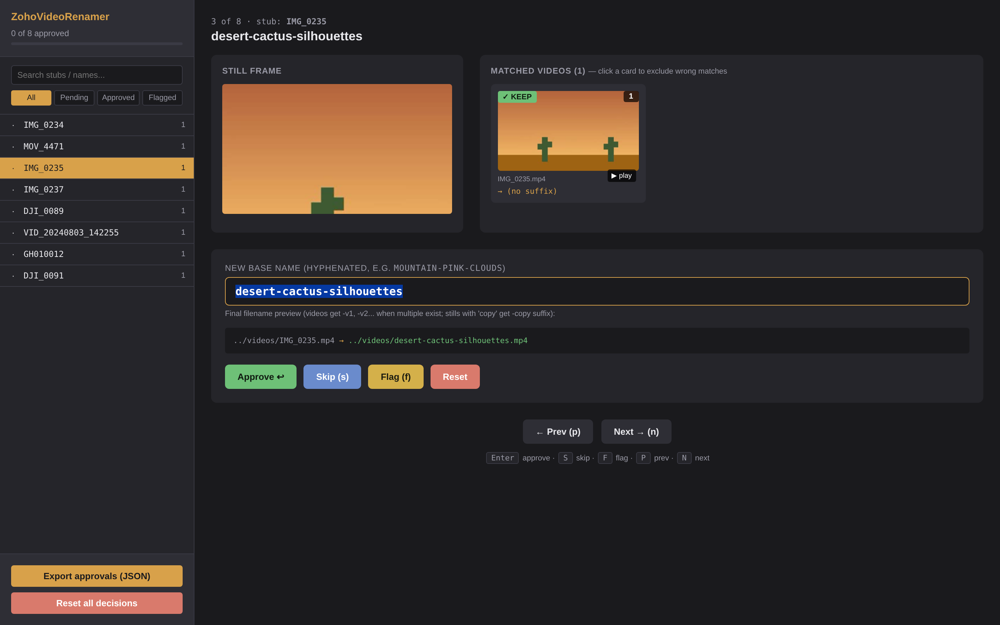
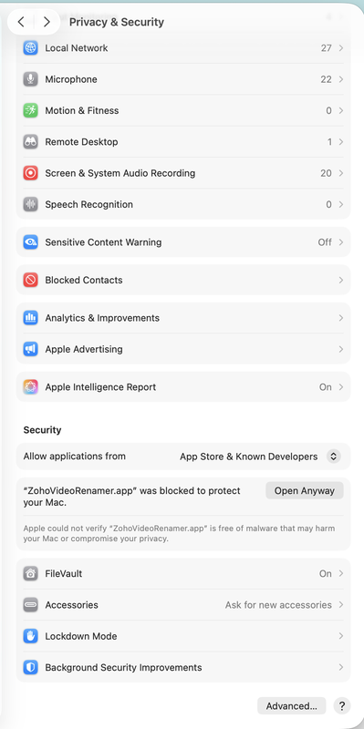

Pick a folder. AI looks at each video and proposes a descriptive name. Review and approve in the same window. Files get renamed. Full undo log. No browser, no terminal, no JSON files to wrangle.
Gen-3 Alpha Turbo 1019957322, zoom out, pan out, l, 00290-3597567898 cop, M 5_prob4.mp4
When you generate dozens of videos from source images using tools like Runway, Pika, or Luma, the resulting
filenames are unsortable garbage. Manually renaming each one to something like saloon-night-shootout.mp4
takes hours. ZohoVideoRenamer does it in minutes.
Same review UI, same bulk-rename pipeline, same undo log. The only difference is what the AI looks at to propose names.
You have both a folder of source stills and a folder of generated videos. The tool matches each video to its source still by filename substring, then names everything based on the still's content.
When to use it: Output from AI video generators like Runway / Pika / Luma where the source-still filename is embedded in the video filename. Typical match rate is 90 %+ on the first try.
You have only videos — random-named clips from a phone, drone, screen capture, etc. The tool extracts three frames per video (start / middle / end) and the AI looks at all three to propose one descriptive 3-word name per clip.
When to use it: Folders of IMG_0234.mp4, DJI_0089.mp4, GH010012.mp4 with no source stills. Toggle the "Videos only" checkbox in the app and pick just the videos folder.

Random-named videos in the sidebar (IMG_0234.mp4, MOV_4471.mp4, …), AI-proposed names in the form field, click-to-exclude on each card, identical review flow to Match mode.
When you commit, pick how the tool touches your files:
No subscriptions, no cloud uploads, no lock-in. Everything runs locally except the (optional) AI naming calls, which use your own API key. No browser, no terminal, no JSON file wrangling.
Pick the folder with your videos (and stills, if you have them). Paste your Anthropic or OpenAI key if you want AI-generated descriptive names. Hit Start.
The app extracts frames from each video and an AI vision model proposes a 3-word descriptive name — mountain-sunset-vista, desert-cactus-dawn. You see them pre-filled in the next screen.
The window switches to the review screen. Each entry shows the still next to its matched videos. Hit Enter to accept the AI name, edit any that need fixing, click-toggle to exclude wrong matches.
One button. Files are renamed in place (or copied / moved to a new folder, your choice). A timestamped undo log lets you reverse the whole run if something looks off.
Built to chew through hundreds of entries quickly. Keyboard-driven (Enter approves, S skips, F flags), live preview of exactly which files will move where, side-by-side still vs. video frame thumbnails, and a play button on every video card so you can verify a match without leaving the page.
State is held in browser localStorage, so you can close the tab, take a break, and pick up where you left off.


The name input shows a live preview of every file that would be moved. Type a name; the preview updates as
you type. Multiple videos for the same still automatically get -v1, -v2, -v3
suffixes. Original and "copy" variants of the same still get distinct destinations so nothing overwrites.
When you actually apply, an undo log lands in the project folder. One command reverses the entire run.
Built for the boring-but-painful case of organizing AI-generated content. Not a SaaS, not a startup — just a single Python package.
Substring + stub-pattern matching catches the embedded source filename that most AI video tools leave behind.
Anthropic Claude or OpenAI GPT-4o for vision-based name proposals. Your keys, your account, your data.
Files never leave your machine. The only network traffic is your own AI API calls, only if you opt in.
Every rename is recorded. undo --execute reverses an entire run if anything looks wrong.
When several videos point at one still, they automatically get -v1, -v2 suffixes.
Enter to approve, S to skip, F to flag, P/N to navigate. Chew through hundreds of entries in minutes.
Just Python + ffmpeg + Pillow. No node_modules, no Docker, no SaaS.
The review UI is a single HTML file. Move it, archive it, email it — works from file://.
Both the GUI app and the Python package require ffmpeg installed locally
(brew install ffmpeg on Mac, official builds on Windows).
The AI naming step is optional and only fires if you explicitly enable it.
For any Mac with an Apple-designed chip (most Macs sold since late 2020). Intel-Mac users: install via pip or open an issue.
Download for macOSNative Windows app. Pick folders in a window, no terminal needed.
Download for WindowsFor developers and power users. Scripts and tinkering welcome.
Install instructions# with Anthropic Claude support pip install zoho-video-renamer[anthropic] # or with OpenAI pip install zoho-video-renamer[openai] # or both pip install zoho-video-renamer[all]
The app is not code-signed (Apple Developer ID and Microsoft EV cert cost hundreds per year, and this is a free OSS tool). That means your OS will refuse to open it on first launch. Here's how to allow it — takes 10 seconds. Subsequent launches work normally.
When you see "ZohoVideoRenamer can't be opened because Apple cannot check it for malicious software":

Faster alternative: In Finder, right-click the app → Open → Open on the confirmation dialog. Done.
Power-user one-liner: xattr -dr com.apple.quarantine /Applications/ZohoVideoRenamer.app
When you see the blue "Windows protected your PC" SmartScreen dialog:
Or: Right-click the .exe → Properties → check Unblock at the bottom → OK → double-click as normal.
These warnings appear because the binary isn't signed by Apple/Microsoft, not because anything is wrong with the code. The source is fully auditable at github.com/princezoho/ZohoVideoRenamer.
Most people should just use the desktop app — everything happens in one window. But if you want to script this into a pipeline, integrate with CI, or batch-process many folders, the same engine ships as a CLI.
# 1. Walk both folders, match videos to stills, generate thumbnails zoho-video-renamer scan \ -s ~/Pictures/source-stills \ -v ~/Movies/generated-videos \ -o ./review # 2. (Optional) Ask an AI to propose 3-word names export ANTHROPIC_API_KEY=sk-ant-... zoho-video-renamer ai-name -o ./review --provider anthropic # 3. Open the review UI in your browser zoho-video-renamer review -o ./review # 4. Dry-run, then execute. An undo log is written automatically. zoho-video-renamer apply -o ./review -a ~/Downloads/rename-approvals.json zoho-video-renamer apply -o ./review -a ~/Downloads/rename-approvals.json --execute # 5. If anything looks wrong, undo: zoho-video-renamer undo --log ./review/rename-undo-*.json --execute
00290-3597567898 (common in AI image generators), or a manual label like bg14,
title-blah, or any literal substring that matches one of your stills' filenames.
So if your still is mountain-sunset.png and your video is pika-render-mountain-sunset-v2.mp4,
the substring mountain-sunset matches.unmatched-videos.json and left alone. You can match them
manually after the fact, or rerun with different stills folders. Nothing gets moved or renamed without your approval.rename-undo-*.json log to your output folder.
Power users can run zoho-video-renamer undo --log path/to/rename-undo-*.json --execute from a terminal to reverse every move.
(A one-click Undo button inside the app is on the roadmap.)
The log records each rename as (current path → original path), so even partial-failure runs are reversible.pip install zoho-video-renamer[all] and run python -m zoho_video_renamer.embedded to launch the same single-window app.docs/architecture.md for a tour.